القدس عاصمة فلـســــــ ـــــــــــ ــــــــــــــــطين
.png)
 

.png) 

القدس عاصمة فلـســــــ ـــــــــــ ــــــــــــــــطين
المصلى القِبْلي أو الجامع القِبْلي هو جزء من المسجد الأقصى -وليس كله- وهو المبنى المسقوف الذي تعلوه قبة رصاصية، يقع جنوبي المسجد الأقصى باتجاهِ القبلة ومن هنا جاءت تسميته بالقِبلي، كان أول من أمر ببناءه الخليفة عمر بن الخطاب عند فتحهِ للقدس عام 15 هـ الموافق 636م. وهو المصلى الرئيسي الذي يتجمع فيه المصلون المسلمون خلف الإمام في صلاة الجمعة في المسجد الأقصى.
يعتقد الكثيرون أن المسجد الأقصى هو فقط الجامع المبني جنوبي قبة الصخرة (المصلى القبلي)، وهو الذي تقام فيه الصلوات الخمس الآن للرجال، والصحيح أن المسجد الأقصى هو اسم لجميع المسجد وهو كل ما هو داخل سور المسجد ويشمل الساحات الواسعة، والجامع القبلي، وقبة الصخرة، والمصلى المرواني، والأروقة والقباب والمصاطب وأسبلة الماء والحدائق وتحت ارض المسجد وفوقه وغيرها من المعالم، وعلى أسواره المآذن ، والمسجد كله غير مسقّف سوى بناء قبة الصخرة والمصلى القبلي الجامع. وهذا ما اتفق عليه العلماء والمؤرخون، وعليه تكون مضاعفة ثواب الصلاة في أي جزء مما دار عليه السور ، وتبلغ مساحته تقريباً: 144000 متراً مربعاً.


مصلى قبة الصخرة أحد أجزاء المسجد الأقصى «فالمسجد الأقصى هو كل ما داخل سور الأقصى»، وهو جزء من أحد أهم المساجد الإسلامية في مدينة القدس وفلسطين والعالم الإسلامي، ومن أجمل الأبنية في العالم، إذ تُعتبر قبّته من أهم وأبرز المعالم المعمارية الإسلامية، كما ويُعتبر أقدم بناء إسلامي بقي مُحافظا على شكله وزخرفته، بنى هذا المسجد والقبّة الخليفة عبد الملك بن مروان، حيث بدأ في بنائها عام 66 هـ الموافق 685م، وانتهى منها عام 72 هـ الموافق 691م، وأشرف على بنائها المهندسان رجاء بن حيوة الكندي، وهو من التابعين المعروفين، ويزيد بن سلام مولى عبد الملك بن مروان، وقبّة الصخرة عبارة عن بناء مثمن الأضلاع له أربعة أبواب، وفي داخله تثمينة أخرى تقوم على دعامات وأعمدة أسطوانية، في داخلها دائرة تتوسطها «الصخرة المُشرفة» التي عرج منها النبي محمد إلى السماء في رحلة الإسراء والمعراج،
سُمِّي هذا القسم من الجدار الغربي نسبة إلى الدابة "البراق، الفرس المجنح"، التي حملت النبي محمد صلى الله عليه وسلم ليلة الإسراء والمعراج، حين أسري بالنبي من مكة إلى القدس. وتشير الروايات التي أثبتتها كتب السيرة النبوية إلى أن النبي محمد صلى الله عليه وسلم ربط دابة البراق قريباً من هذا الجزء من جدار الحرم الغربي حينما زار منطقة الحرم الشريف وعرج منها إلى السماوات.
ويُشار إلى هذا الحائط في بعض الكتابات الغربية بحائط المبكى.
ويعود سبب هذه التسمية إلى أن فئة محلية من اليهود مُنحوا خلال الفترة العثمانية فرصة زيارة هذا الحائط لتذكر وندب ماضيهم الذي ظنوا أنه يرتبط بهذا المكان.
لكن اسم "الحائط الغربي" أصبح مؤخراً أكثر شيوعاً للدلالة على هذا الحائط.
حائط البراق ذو أهمية دينية إسلامية كبيرة، فهو الموقع الذي رُبطت فيه البراق، وهو بناء عربي إسلامي. وكان من الطبيعي أن يستعمل المسلمون في بناء هذا الحائط حجارة مبانٍ هُدِمت قبل الفتح الإسلامي.

باب حطة من أقدم أبواب المسجد الأقصى المبارك, يقع على سوره الشمالي بين بابي الأسباط وفيصل، جدد في الفترة الأيوبية زمن السلطان الملك المعظم شرف الدين عيسى عام 617هـ -1220م، ولا يعرف أول من بناه، وإن كان بعض العلماء قد قال إنه كان موجوداً قبل دخول بني إسرائيل إلى الأرض المقدسة، للآية الكريمة (وادخلوا الباب سجداً وقولوا حطة)، غير أنه لا يوجد دليل على أنه الباب المذكور في الآية.
هذا الباب بسيط البناء، محكم الصنعة، مدخله مستطيل، وتعلوه مجموعة من العلاقات الحجرية، كانت فيما مضى تستخدم لتعليق القناديل

الباب الثلاثي عبارة عن ثلاثة أبواب متجاورة مغلقة، يقع قريبًا من منتصف السور الجنوبي للأقصى، والذي يتحد مع سور القدس في هذه الناحية، ولا زالت آثار هذا الباب ظاهرة للعيان من الخارج.
وهو عبارة عن ثلاثة مداخل متجاورة تطل على دار الإمارة والقصور الأموية القائمة جنوب الأقصى، وتقود إلى الجدار الغربي للمصلى المرواني الواقع داخل المسجد الأقصى المبارك.
بناه الأمويون على الأرجح، في عهد عبد الملك بن مروان.
والظاهر أنه كان يستخدم للوصول إلى هذا المصلى القائم تحت الساحة الجنوبية الشرقية للمسجد الأقصى المبارك (التسوية الجنوبية الشرقية)، وبقي الباب مفتوحًا حتّى في زمن الصليبيين الذين استخدموا التسوية إسطبلًا للخيول، إلى أن جاء صلاح الدين الأيوبي رحمه الله وقام بتنظيفها وترميمها، وأقفل الباب الثلاثي لحماية المدينة والمسجد من الغزو.